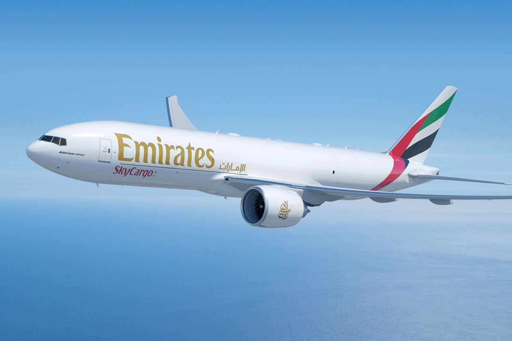
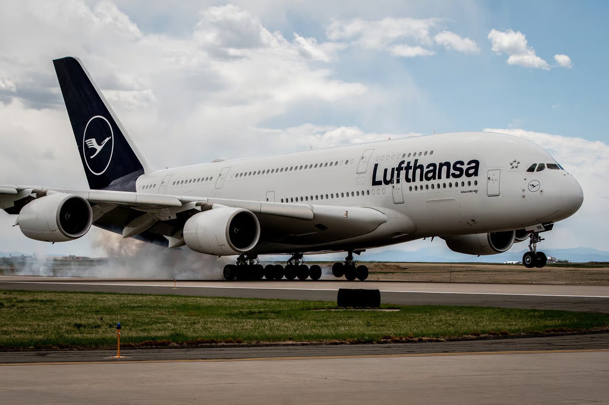
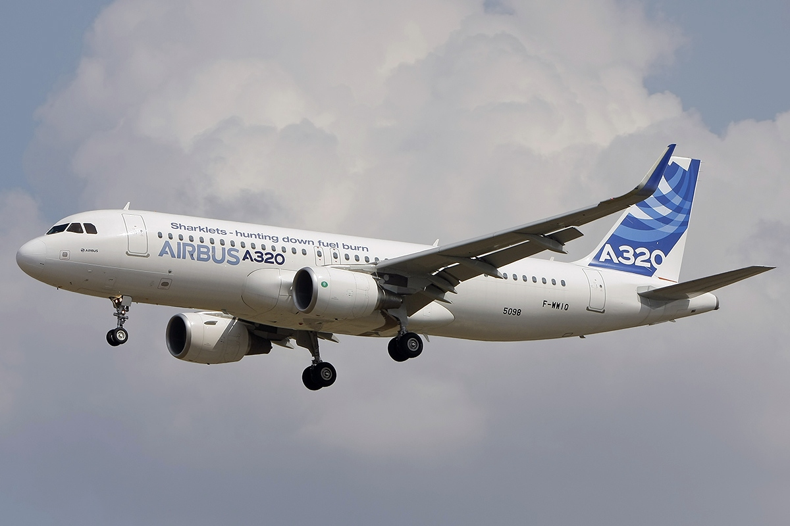
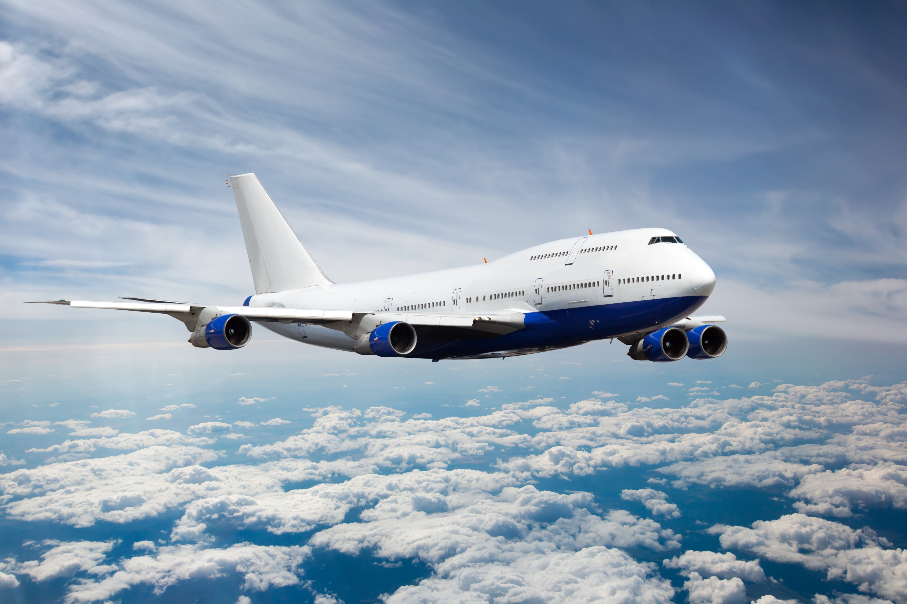
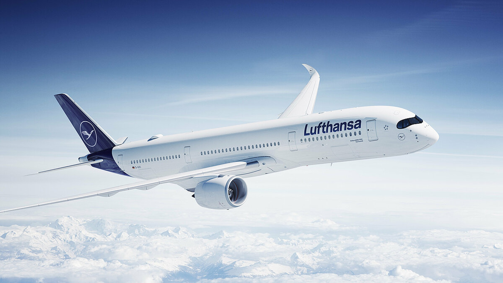
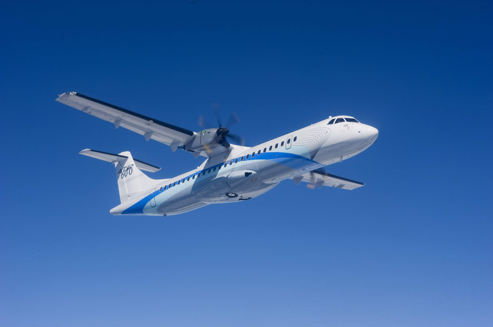
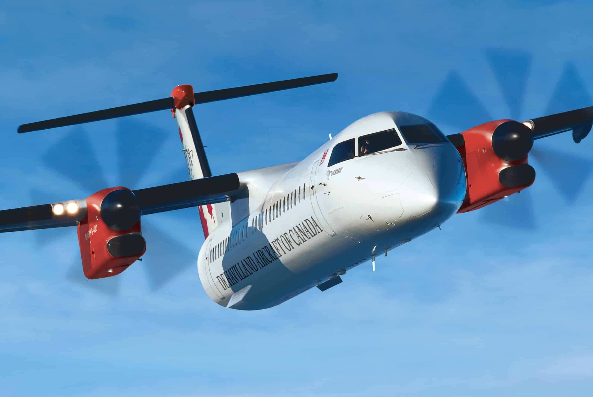

Airliners
Check out a few featured airliners

Boeing 777
The Boeing 777 is a long-range aircraft used for international travel. It is known for its reliability and ability to carry large numbers of passengers comfortably.

Airbus A380
The Airbus A380 is the largest passenger aircraft ever built. It is designed to carry hundreds of people on busy long-haul routes in comfort.

Airbus A320
The Airbus A320 is a common short to medium-haul aircraft. It is widely used by airlines around the world for everyday flights.

Boeing 747
The Boeing 747 is a famous wide-body aircraft known for its unique upper deck. It was one of the first jumbo jets and played a major role in long-haul air travel.

Airbus A350
The Airbus A350 is a modern long-range aircraft designed for efficiency and comfort. It uses advanced materials and technology to reduce fuel use and improve the flying experience.

Boeing 787
The Boeing 787 Dreamliner is built for long-distance travel with better fuel efficiency. It is known for its quieter engines and smoother, more comfortable flights.

Embraer 190
The Embraer 190 is a smaller regional jet used for shorter routes. It is ideal for connecting cities that don’t need large aircraft.

Atr 72
The ATR 72 is a turboprop aircraft designed for short regional flights. It is efficient and commonly used at smaller airports.

Dash 8
The Dash 8 is a reliable regional aircraft known for its ability to operate at smaller airports. It is often used for short-distance travel.